Zotero群组的使用[^11]¶
同事之间，同一个课题组之间共享题录信息可以通过Zotero提供的群组功能实现。 我们可以创建群组并邀请其他人加入(4.1)。 也可以作为成员申请加入其他的群组(4.2)。 将自己的文献复制到群组，也可以将群组文献复制到我们自己的库中(4.3)。
创建群组并邀请其他人加入¶
-
将3.1申请的 用户名(或Email)和密码填写到https://www.zotero.org/user/login/中， 然后， 如[fig:ch4ZotLogin]所示[]{#page:zoteroLogin label=”page:zoteroLogin”}。
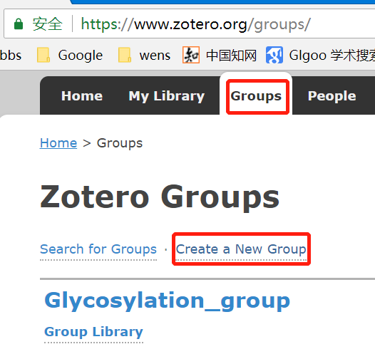
-
在打开的网页中，依次,如[fig:ch4ZotGroupCreat1]所示, 如果申请的用户名(邮箱)没有进行激活验证，则无法创建群组，激活验证的方法见3.1。
-
在接下来打开的页面中，输入群组的名称，当群组名称下面提示的颜色变化绿色时，这个名称才可以使用。然 后选择群组的类型：公共开放成员型(任何人可以查看和即时加入)、公共关闭会员型(任何人可以查看但用户必须申请或邀请) 以及私秘成员型(仅成员可以查看群组，成员必须申请或被邀请)，一般我们选择第二种或第三种， 然后点击，如[fig:ch4ZotGroupName]所示。
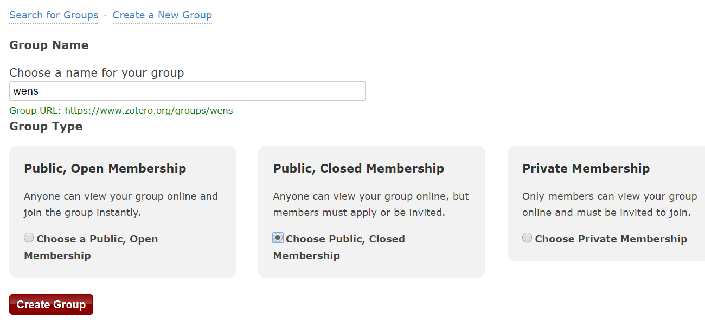
-
接下来的页面中是群组的一些设置，如群组的类型，哪些人可以读群组文献库，哪些人可以对群组编辑 ，哪些人可以编辑群组文件等，根据需要进行选择即可，完成后点击， 如[fig:ch4ZotGroupSetting]所示，而后网页提示Group Settings Saved(群组设置已保存)。
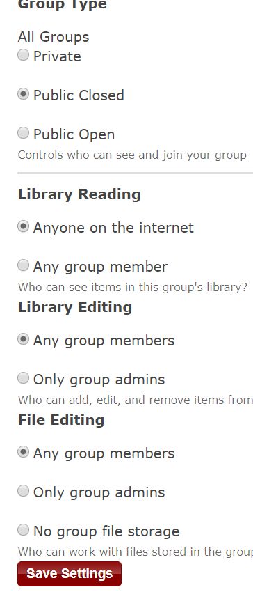
-
群组设置完成后，点击页面顶部的， 在打开的页面中点击链接来管理群组成员， 如[fig:ch4ZotGroupInvite1]所示。 在这也可以点击 或对群组的相关设置进行调整。
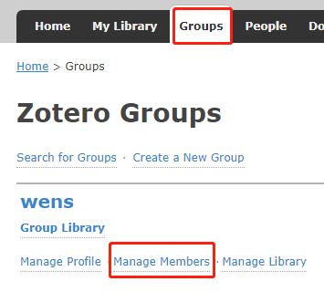
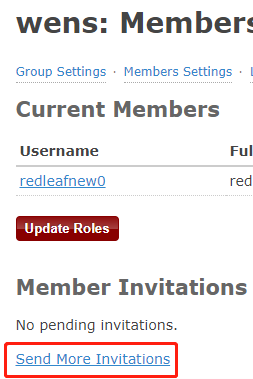
-
在打开的页面中，点击来发送邀请， 如[fig:ch4ZotGroupInvite2]所示, 在打开的页面的输入框中输入被邀请人的用户名或Email地址，多个用户之间用英文逗号间隔， 然后再点击，如[fig:ch4ZotGroupInvite3]所示， 而后会返回邀请的结果，[fig:ch4ZotGroupInvite4]。
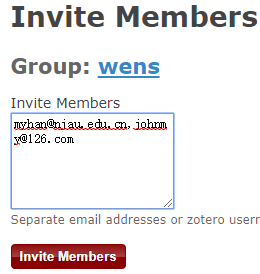
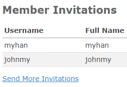
-
当被邀请用户按方法登录Zotero网站， 并点击后在页面右侧会显示收到的群组邀请信息，点击， 即可加入群组，如[fig:ch4ZotGroupInvite5]所示， 然后刷新网页后就会显示当前已经加入的群组，如[fig:ch4ZotGroupInvite6]所示。
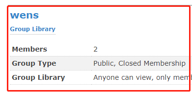
-
按3.4的描述，用自己的用户名密码在Zotero登录后， 在Zotero左侧面板会也会显示已经加入的群组，如[fig:ch4ZotGroupInvite7]所示, 而且会自动将群组中的文献同步到本地。
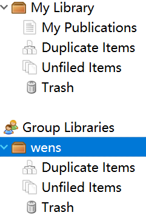
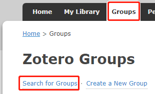
申请加入群组¶
-
按所示方法， 用自己的用户名/Email地址和密码登录https://www.zotero.org/user/login/网站。
-
登录网站后依次，如[fig:ch4ZotSearchGroup1]所示。
-
在打开的网页中点击， 然后输入群组的名称，点击，如[fig:ch4ZotSearchGroup2]所示。
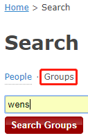
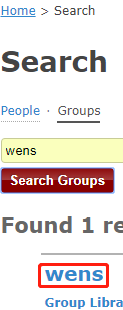
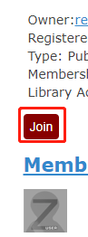
-
在搜索结果中点击需要申请加入的群组名称，如[fig:ch4ZotSearchGroup3]所示， 然后在打开页面的右侧点击申请加入群组，如[fig:ch4ZotSearchGroup4], 然后网页会提示：You have applied to join this group. A group admin must approve your application.
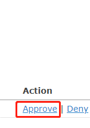
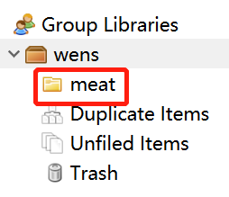
-
管理员的邮箱中会收到Zotero发送的邮件， 提示有人申请加入群组，此邮件也有可能被邮箱系统放入到垃圾邮件中。 群组管理员根据邮件提示登录到Zotero网站， 即可，如[fig:ch4ZotSearchGroup5]所示。
群组文献添加和复制¶
-
在群组库中，也可以像1.3点击 或右击群组的名称选择 建立分类及子分类以方便题录的管理，建立分类的结果如[fig:ch4ZotGroupNewColl]所示。
-
添加群组文献实现可以通过两种方法实现，一是直接将Zotero左侧面板自己文献库中的题注拖放到群组库的相应文件夹中， 如[fig:ch4ZotGroupDragCitation]所示。 另外，也可以在选中群组库文件夹后，通过1.3.2\(\sim\)1.3.6的方法在线导入或手动输入题录。
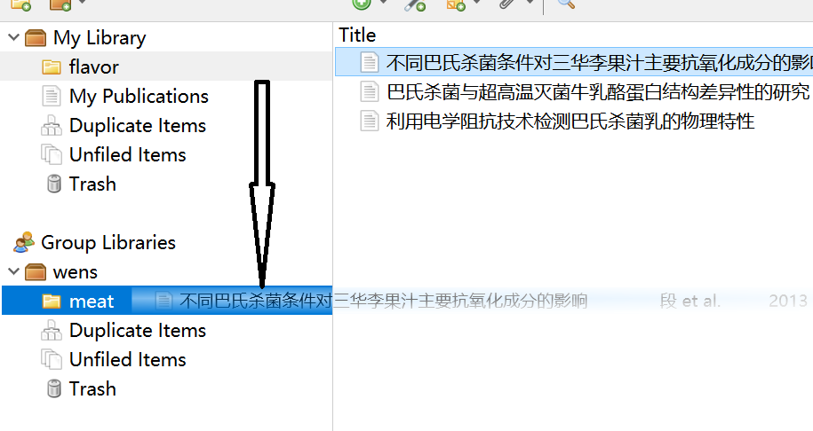
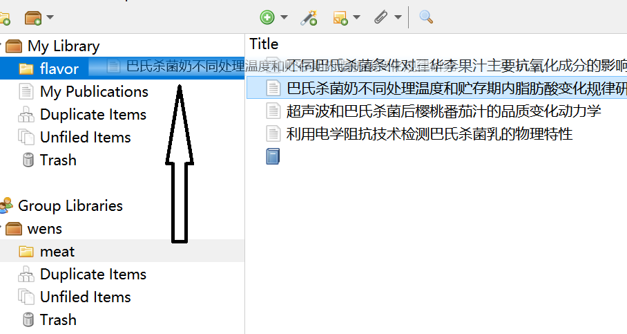
-
看到群组库中有我们感兴趣的文献后，我们可以将文献复制到自己文件夹中， 复制的方式是在群组库选中需要的文献，拖放到本地库的相应文件夹中即可， 如所示[fig:ch4ZotGroupDrayFromGroup]。